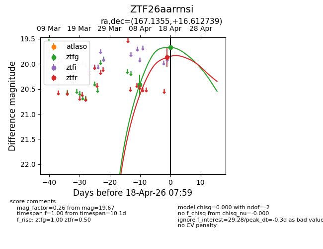
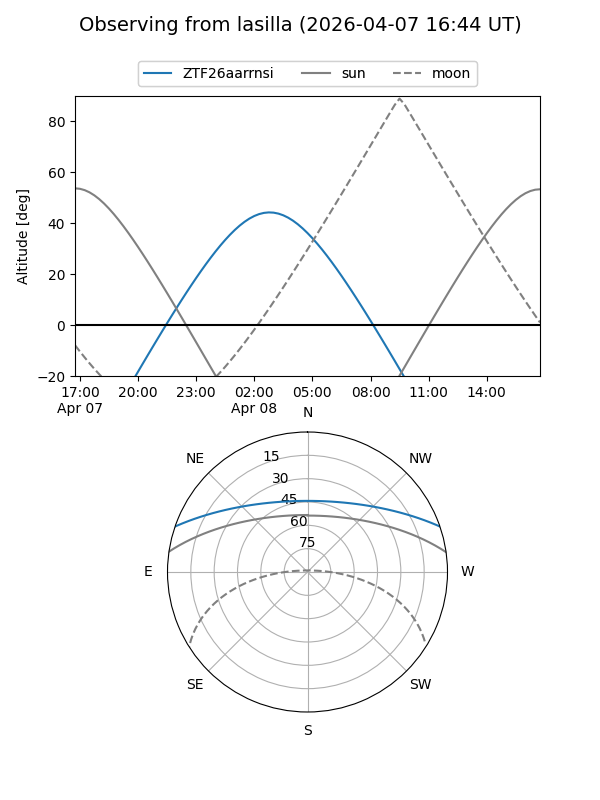
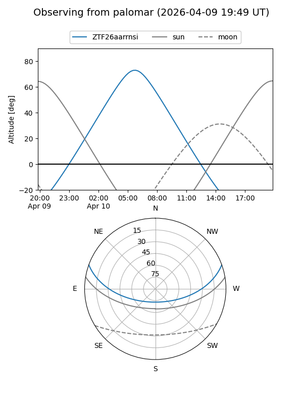
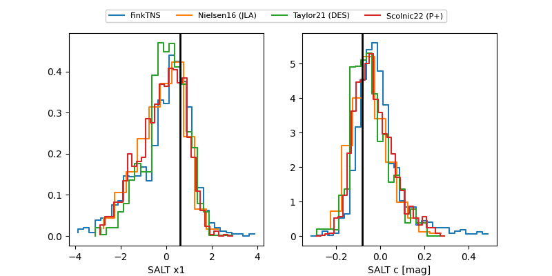

ZTF26aarrnsi
Target ZTF26aarrnsi at 2026-04-18 08:05
Aliases and brokers:
FINK: link
Lasair: link
ALeRCE: link
alt names
ZTF26aarrnsi (ztf,fink_ztf)
Coordinates:
equatorial (ra, dec) = 167.1355,+16.61274
equatorial (HMS+DMS) = 11:08:32.51,+16:36:45.86
galactic (l, b) = (231.4360,+63.98577)
Flags:
Photometry:
last ztfg=19.67, ztfr=19.87
2 ztfg, 1 ztfr detections
Lightcurve

Visibility


Additional plots
